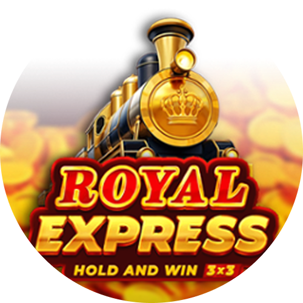
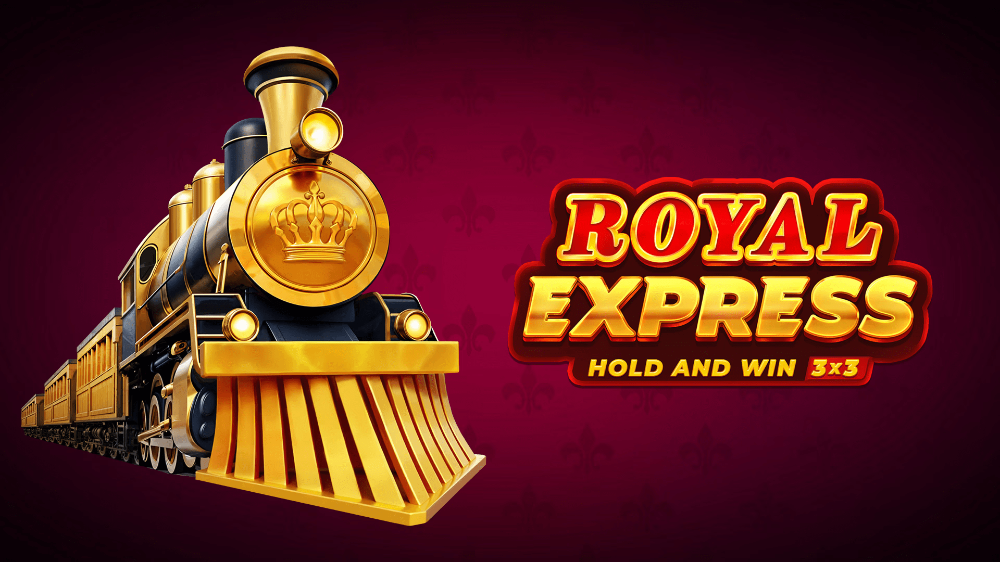
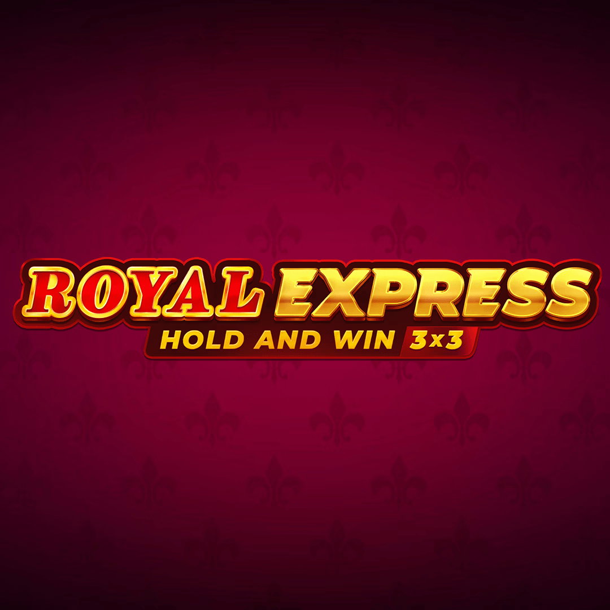
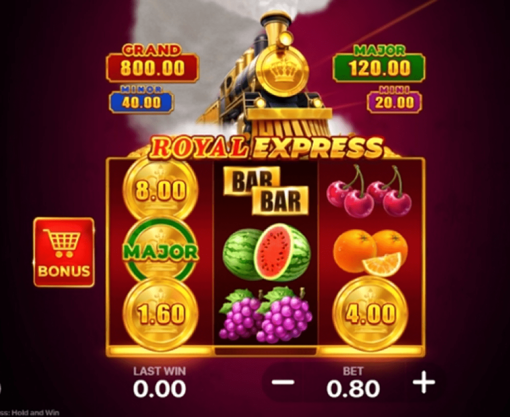
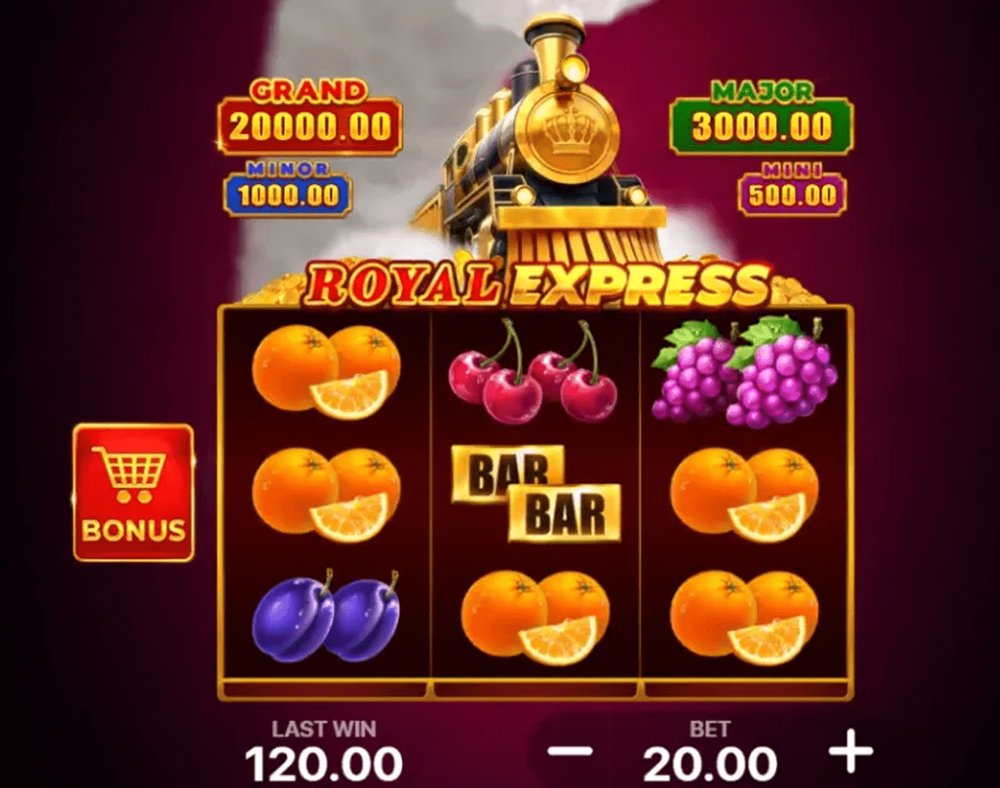

Before you stake any of your hard-earned cash, it is highly recommended that you take full advantage of the Royal express: Hold and Win demo mode. Virtually every reputable online casino, including all of our recommended sites, offers a "Play for Fun" or "Demo" version of the slot.
Express: Hold and Win - The Ultimate Guide to First-Class Wins!
All aboard for a luxurious journey back to the golden age of rail travel, where opulence, mystery, and massive jackpots await at every stop! Welcome to your definitive guide to the Royal Express: Hold and Win online slot, a magnificent creation from the innovative developers at Playson. This exceptional game has captivated players worldwide by masterfully blending a sophisticated, vintage theme with the proven, heart-pounding excitement of the Hold and Win jackpot mechanic.
Play Royal express 🛩️

The Best Sites to Play Royal express: Hold and Win
The first step on your luxurious journey is choosing the right place to play. A top-tier online casino does more than just host the game; it creates a secure, rewarding, and seamless environment for your entire gaming session. After extensive research, we have identified the premier online casinos that not only feature the incredible Royal express Hold and Win slot but also offer exceptional service, generous bonuses, and a commitment to player satisfaction. These platforms are where your first-class adventure truly begins.
Royal express: Hold and Win is a captivating 5-reel, 3-row video slot that operates on 20 fixed paylines. Developed by Playson, a leading name in the iGaming industry, this game transports players to an era of glamorous train travel, reminiscent of classic mystery novels and opulent voyages. The entire aesthetic is built around the powerful imagery of a majestic steam train, well-dressed passengers, valuable luggage, and the promise of a grand adventure. The immersive soundtrack, featuring the chugging of the train and a sophisticated musical score, enhances the feeling of being on a high-stakes journey.
At its core, the game is a premier example of the "Hold and Win" genre, a style of slot celebrated for its signature respin bonus feature. This mechanic is the heart of the game, offering players the chance to win one of four fixed jackpots by landing special Bonus symbols on the reels. The more Bonus symbols you collect during the Express Respins feature, the closer you get to the Grand Jackpot of 5,000x your stake. This is complemented by a powerful Free Spins feature where low-paying symbols are removed, dramatically increasing your chances of landing big wins. The combination of these features makes every spin of the Royal Express: Hold and Win slot a thrilling ride towards fortune.
Screenshots of the Luxurious Gameplay
(This section is designed to feature a gallery of high-resolution screenshots. The images would showcase: 1. The main game interface, highlighting the 5x3 reel layout, the elegant symbols, and the jackpot values displayed above the reels. 2. A close-up of the reels showing 6 Train Bonus symbols landing, triggering the Express Respins feature. 3. The Express Respins bonus round in action, with multiple coin and jackpot symbols locked on the screen. 4. A celebratory "Grand Jackpot" win screen, showcasing a massive payout and celebrating the player's success.)
The Core Mechanics: How the Journey Unfolds
Despite its exciting features, the fundamental mechanics of Royal express: Hold and Win are intuitive and easy for players of all experience levels to grasp. Here is a detailed breakdown of the gameplay flow:
- Setting Your Bet: Before the train leaves the station, you must select your wager for the spin. The game offers a wide betting range, typically from $0.20 to $100 per spin, making it accessible for both casual players and high rollers. You can easily adjust your bet using the controls on the game's interface.
- Spinning the Reels: Once your bet is locked in, you hit the spin button. The five reels will spin and come to a stop, revealing a new combination of symbols.
- Standard Winning Combinations: In the base game, standard wins are formed by landing three or more matching symbols on one of the 20 active paylines, starting from the leftmost reel. The paytable, found in the game's menu, details the payout for each symbol. The playing card royals (J, Q, K, A) are the lower-paying symbols, while the thematic symbols like the Champagne, Luggage, and elegant Passengers offer higher payouts.
- The Role of Special Symbols: The true power of the game lies in its special symbols. The Conductor acts as the Wild symbol, substituting for all other symbols except the Train and Scatter symbols to help form winning lines. The Gold Safe is the Scatter symbol, and landing three of these triggers the Free Spins feature. The Golden Train is the Bonus symbol, and landing six or more is your ticket to the Express Respins jackpot round.
Game Integrity and Fairness
You can play the Royal express: Hold and Win slot with complete confidence, knowing that its outcomes are governed by a certified Random Number Generator (RNG). This sophisticated algorithm ensures that every spin is an independent event, with results that are entirely random and cannot be predicted or manipulated. Playson is a highly respected and fully licensed software provider. Their games undergo rigorous testing by independent, third-party auditing agencies to verify the fairness of the RNG and the accuracy of the published Royal express Hold and Win RTP. Playing at a licensed casino further guarantees a fair gaming environment.
Basic Terms You Need to Know
To fully master the game, it helps to be familiar with a few key terms. Here are the essential concepts you'll encounter while playing:
- Payline: A fixed line across the reels where matching symbols must land to create a standard win. This game has 20.
- Wild Symbol (Conductor): A special symbol that can substitute for any standard symbol to help form a winning combination.
- Scatter Symbol (Gold Safe): Landing three of these on reels 1, 3, and 5 triggers the Free Spins feature.
- Bonus Symbol (Golden Train): Landing six or more of these anywhere on the reels triggers the Express Respins (Hold and Win) feature.
- Express Respins: The branded name for the Hold and Win jackpot feature. This is a respin round where players collect cash and jackpot symbols.
- RTP (Return to Player): A theoretical percentage of all wagered money a slot is programmed to pay back to players over the long term.
- Volatility (Variance): A measure of a slot's risk. Royal express Hold and Win has high volatility, meaning it may have longer periods without wins but offers the potential for very large payouts.
What is the Royal express: Hold and Win Slot?
Royal express: Hold and Win is a captivating 5-reel, 3-row video slot that operates on 20 fixed paylines. Developed by Playson, a leading name in the iGaming industry, this game transports players to an era of glamorous train travel, reminiscent of classic mystery novels and opulent voyages. The entire aesthetic is built around the powerful imagery of a majestic steam train, well-dressed passengers, valuable luggage, and the promise of a grand adventure. The immersive soundtrack, featuring the chugging of the train and a sophisticated musical score, enhances the feeling of being on a high-stakes journey.
At its core, the game is a premier example of the "Hold and Win" genre, a style of slot celebrated for its signature respin bonus feature. This mechanic is the heart of the game, offering players the chance to win one of four fixed jackpots by landing special Bonus symbols on the reels. The more Bonus symbols you collect during the Express Respins feature, the closer you get to the Grand Jackpot of 5,000x your stake. This is complemented by a powerful Free Spins feature where low-paying symbols are removed, dramatically increasing your chances of landing big wins. The combination of these features makes every spin of the Royal express: Hold and Win slot a thrilling ride towards fortune.
Screenshots of the Luxurious Gameplay
(This section is designed to feature a gallery of high-resolution screenshots. The images would showcase: 1. The main game interface, highlighting the 5x3 reel layout, the elegant symbols, and the jackpot values displayed above the reels. 2. A close-up of the reels showing 6 Train Bonus symbols landing, triggering the Express Respins feature. 3. The Express Respins bonus round in action, with multiple coin and jackpot symbols locked on the screen. 4. A celebratory "Grand Jackpot" win screen, showcasing a massive payout and celebrating the player's success.)
The Core Mechanics: How the Journey Unfolds
Despite its exciting features, the fundamental mechanics of Royal express: Hold and Win are intuitive and easy for players of all experience levels to grasp. Here is a detailed breakdown of the gameplay flow:
- Setting Your Bet: Before the train leaves the station, you must select your wager for the spin. The game offers a wide betting range, typically from $0.20 to $100 per spin, making it accessible for both casual players and high rollers. You can easily adjust your bet using the controls on the game's interface.
- Spinning the Reels: Once your bet is locked in, you hit the spin button. The five reels will spin and come to a stop, revealing a new combination of symbols.
- Standard Winning Combinations: In the base game, standard wins are formed by landing three or more matching symbols on one of the 20 active paylines, starting from the leftmost reel. The paytable, found in the game's menu, details the payout for each symbol. The playing card royals (J, Q, K, A) are the lower-paying symbols, while the thematic symbols like the Champagne, Luggage, and elegant Passengers offer higher payouts.
- The Role of Special Symbols: The true power of the game lies in its special symbols. The Conductor acts as the Wild symbol, substituting for all other symbols except the Train and Scatter symbols to help form winning lines. The Gold Safe is the Scatter symbol, and landing three of these triggers the Free Spins feature. The Golden Train is the Bonus symbol, and landing six or more is your ticket to the Express Respins jackpot round.
Game Integrity and Fairness
You can play the Royal express: Hold and Win slot with complete confidence, knowing that its outcomes are governed by a certified Random Number Generator (RNG). This sophisticated algorithm ensures that every spin is an independent event, with results that are entirely random and cannot be predicted or manipulated. Playson is a highly respected and fully licensed software provider. Their games undergo rigorous testing by independent, third-party auditing agencies to verify the fairness of the RNG and the accuracy of the published Royal express Hold and Win RTP. Playing at a licensed casino further guarantees a fair gaming environment.
Basic Terms You Need to Know
To fully master the game, it helps to be familiar with a few key terms. Here are the essential concepts you'll encounter while playing:
- Payline: A fixed line across the reels where matching symbols must land to create a standard win. This game has 20.
- Wild Symbol (Conductor): A special symbol that can substitute for any standard symbol to help form a winning combination.
- Scatter Symbol (Gold Safe): Landing three of these on reels 1, 3, and 5 triggers the Free Spins feature.
- Bonus Symbol (Golden Train): Landing six or more of these anywhere on the reels triggers the Express Respins (Hold and Win) feature.
- Express Respins: The branded name for the Hold and Win jackpot feature. This is a respin round where players collect cash and jackpot symbols.
- RTP (Return to Player): A theoretical percentage of all wagered money a slot is programmed to pay back to players over the long term.
- Volatility (Variance): A measure of a slot's risk. Royal express Hold and Win has high volatility, meaning it may have longer periods without wins but offers the potential for very large payouts.
Best Royal express: Hold and Win Casino Sites (with Interac Payment Options)
Choosing the right online casino is a critical part of the experience. A top platform will not only feature the game but also provide secure and convenient payment methods, like Interac, which is essential for many Canadian players. Here are the best online casinos to board the Royal express: Hold and Win.
Rocketplay Casino
Rocketplay has surged in popularity thanks to its sleek, modern interface and its forward-thinking approach to banking. While it's especially known for its crypto-friendliness, it also offers a solid range of traditional payment methods, making it a versatile choice for this luxurious slot.
- Game Library: Rocketplay boasts a massive library with thousands of titles from a plethora of leading providers, including the full suite from Playson. This ensures you can easily find and play the Royal express Hold and Win slot alongside a huge variety of other games.
- Bonus Structure: New players are often greeted with a generous welcome package that includes a deposit match and free spins. Rocketplay is also known for its ongoing promotions, a multi-tiered VIP program, and frequent slot tournaments, giving you plenty of extra value for your gameplay.
- User Experience: The site features a slick, dark theme with intuitive navigation, making it incredibly easy to find your favourite games. Its mobile-optimized platform is fast and responsive, ensuring a flawless gaming session on any device.
Winspirit Casino
Winspirit focuses on creating a vibrant and engaging atmosphere for its players. It operates with a strong license and offers a well-curated catalogue of high-quality games, making it another excellent choice for your grand tour.
- Quality Game Selection: Winspirit maintains a strong partnership with Playson, ensuring they have the latest and greatest titles, including Royal express: Hold and Win. Their library focuses on quality over sheer quantity, so you know you're getting a top-tier gaming experience.
- Player-Friendly Bonuses: This casino is respected for its transparent and fair bonus terms. You can regularly find attractive welcome bonuses, valuable reload offers, and cashback deals that provide genuine value and can be used to extend your playtime.
- Mobile-First Design: Winspirit's platform is built with mobile gaming as a priority. The interface is clean, fast, and perfectly adapted for smaller screens, allowing you to enjoy every spin without compromise, no matter where you are.
Sisal Casino
Sisal is a powerhouse in the European gaming market, particularly in Italy, with a long and storied history dating back to 1946. It has successfully transitioned into a formidable online presence, offering a highly secure and feature-rich environment.
- Unmatched Reputation and Trust: As a historic and publicly recognized brand, Sisal offers an unparalleled level of trust and security. It operates under the strict regulations of the Italian gambling authority (ADM), ensuring the highest standards of player protection.
- Curated Game Portfolio: Sisal carefully selects games from top-tier providers like Playson to add to its exclusive library. Finding Royal express: Hold and Win here means you are playing a certified game on a platform with a sterling reputation.
- Exclusive Promotions: Sisal is known for its unique and localized promotional offers, including a robust loyalty program and frequent bonuses tailored to its player base. This provides a different flavour of rewards compared to many international casinos.
SpinCasino
SpinCasino is a long-standing and highly respected name in the online casino world, with decades of experience. It has built a loyal following by focusing on high-quality games from top providers, excellent customer service, and a secure environment.
- A Hub for Premium Slots: As a casino that has long prioritized content from industry giants, SpinCasino is a reliable place to find premium Playson titles like Royal express: Hold and Win.
- Interac-Friendly Banking: SpinCasino caters heavily to the Canadian market and offers full support for Interac payments, making transactions simple and familiar for local players.
- Generous Welcome Offer: SpinCasino is famous for its substantial welcome bonus, which often extends over the first few deposits, giving new players a massive bankroll boost to start their gaming journey.
- Proven and Trustworthy: With a license from the MGA and certification from eCOGRA, SpinCasino has a long-established reputation for fairness, security, and player satisfaction, making it a safe bet for any player.
How to Choose the Perfect Casino?
While our recommendations are a fantastic starting point, you might want to evaluate other platforms. Use this comprehensive checklist to ensure you choose a safe and high-quality casino:
- Licensing and Regulation: This is non-negotiable. The casino must hold a valid license from a respected authority like the MGA, UKGC, or a national regulator like Italy's ADM.
- Security Measures: Ensure the site uses modern SSL encryption to protect your personal and financial information.
- Game Selection and Providers: Confirm that the casino partners with Playson to offer the Royal express: Hold and Win slot. A diverse library with other reputable providers is also a strong indicator of a quality casino.
- Bonuses and Promotions: Examine the terms and conditions, specifically the wagering requirements. A good casino offers ongoing promotions and a rewarding loyalty program.
- Payment Methods (including Interac): The casino should offer a variety of safe and reliable payment options. For Canadian players, the inclusion of Interac is a massive plus. Check for reasonable processing times for withdrawals.
- Mobile Compatibility: A top-tier modern casino must have a fully optimized mobile website or a dedicated app.
- Customer Support: Reliable customer support is crucial, preferably 24/7 via live chat.
Player Reputation: Read reviews from other players on independent, trusted forums and review sites.
How to Start Playing Royal express: Hold and Win
Getting started on your luxurious journey is a quick and straightforward process. Follow these simple steps to go from a new visitor to spinning the reels in minutes:
- Choose a Recommended Casino: Select one of the trusted casinos from our list above that fits your needs, such as the Interac-friendly SpinCasino or the modern Rocketplay.
- Create Your Account: Click the "Sign Up" or "Register" button on the casino's homepage. You'll need to provide some basic information like your email address and create a password.
- Verify Your Account: For security, most casinos will send a verification link to your email. Click this link to activate your account. You may need to complete a full identity (KYC) verification before you can withdraw winnings.
- Make a Deposit: Navigate to the "Cashier" or "Banking" section. Choose your preferred deposit method, enter the amount you wish to deposit, and consider claiming the welcome bonus if it's favourable.
- Find the Game: Use the casino's search bar and type in "Royal express: Hold and Win". Click on the game icon to launch it.
- Set Your Bet and Play: Once the game loads, set your bet amount, review the paytable, and hit the spin button. Good luck!
Royal express: Hold and Win Demo Mode

This free-play mode is an invaluable tool for several critical reasons:
- Learn Without Risk: The demo version allows you to become intimately familiar with the game's paylines, symbol values, and, most importantly, how to trigger the Express Respins and Free Spins features without spending a single penny.
- Experience the Volatility: The demo provides a genuine feel for the game's high volatility. You can observe how the game plays over many spins, helping you to prepare for the swings of a real money session.
- Test Betting Strategies: This is the perfect sandbox for experimenting with different strategies. You can see how different bet sizes affect your virtual bankroll over time, helping you decide on an approach before you play for real money.
- Pure Entertainment: Sometimes, you just want to enjoy the beautiful graphics and sophisticated theme of a great slot game without any financial pressure. The demo mode is perfect for stress-free entertainment.
The demo version is identical to the real money game in every functional aspect—the mechanics, the bonus features, and the official Royal express Hold and Win RTP all function exactly the same. The only difference is that you are playing with a replenishing balance of virtual credits.
Differences Between the Game in Various Casinos
While the core Royal express: Hold and Win game itself is identical everywhere, the overall player experience can differ significantly from one casino to another. These differences are not in the game's code but in the surrounding ecosystem that the casino provides.

- Promotional Offers: This is the biggest differentiator. One casino might offer a welcome package with a large deposit match. Another might have a loyalty program that rewards consistent play. Always check the promotions page to see how a casino can add value to your gameplay.
- Tournaments and Races: Many casinos, like Rocketplay, run regular slot tournaments or "races." Playing Royal express: Hold and Win during these events can earn you points on a leaderboard, with top-ranking players winning cash prizes, bonuses, or free spins. This adds a competitive layer to your gameplay.
- User Interface and Performance: The speed and design of the casino's website or mobile app can affect your gaming enjoyment. A well-optimized site like SpinCasino will ensure that the game loads quickly and runs smoothly without lag.
VIP and Loyalty Programs: Playing for real money at a casino with a strong loyalty program means that every spin on Royal express: Hold and Win contributes towards points. These points can be redeemed for cash bonuses, free spins, or other exclusive perks, adding another layer of value to your gameplay over time.
How to Win at Royal express: Hold and Win - Strategies and Tips
It is essential to remember that online slots are games of chance, and their outcomes are dictated by an RNG. Therefore, no strategy can guarantee a win. However, you can employ certain intelligent approaches to manage your bankroll, maximize your playtime, and potentially improve your chances of walking away a winner.
The Bankroll Management Strategy
This is the most crucial strategy for any form of gambling, especially on a high-volatility slot.
- Set a Strict Budget: Before you play, decide on a specific amount of money you are prepared to lose. This must be discretionary income. Once you've set this budget, stick to it.
- Size Your Bets Appropriately: For a high-volatility game like this, it's wise to set your bet size to be a smaller fraction (e.g., 1/200th) of your total session budget. This approach allows you to withstand the longer periods between wins and gives you more spins, increasing your chances of triggering a bonus feature.
- Establish Clear Win/Loss Limits: Discipline is key. Set a realistic win goal and a hard loss limit. If you hit your win goal, cash out. If you deplete your budget, walk away. This prevents chasing losses.
Chasing the Express Respins Jackpots
The main allure of the game is the Hold and Win jackpot feature. The key to landing this is simply spin volume.
- Prioritize Longevity: Since triggering the bonus requires 6 Train symbols, the more spins you make, the more chances you have. Playing with smaller, more conservative bets allows you to extend your session and maximize your total number of spins for a given budget. The goal is to stay in the game long enough for that lucky spin with 6 or more trains to land.
Maximizing the Free Spins Bonus Strategy
While the jackpots are exciting, the Free Spins round can be incredibly lucrative due to its special mechanic.
- The Goal is the Safe: Your primary objective in the base game should be to land the three Gold Safe scatters on reels 1, 3, and 5. This is your ticket to a feature with enhanced winning potential.
- The Power of Symbol Removal: During the 8 free spins, all low-paying royal symbols (J, Q, K, A) are removed from the reels. This means that only high-paying thematic symbols, Wilds, and Bonus symbols can land. This dramatically increases your chances of hitting multiple high-value five-of-a-kind wins and also makes it easier to land the 6+ Train symbols needed to trigger the Express Respins feature from within the free spins.
Re-triggers are Gold: The Free Spins feature can be re-triggered by landing another three scatters. This awards another 8 free spins with the symbol removal mechanic still active, extending your chance to rack up big wins.

The Express Respins (Hold and Win) Feature Explained
The Express Respins feature is the heart and soul of the Royal express: Hold and Win slot. It is a classic Hold and Win-style bonus that is triggered by landing 6 or more Golden Train Bonus symbols anywhere on the reels in a single spin.
When triggered, all standard symbols fade away, and the triggering Train symbols lock in place. You are awarded 3 respins. The goal is to land more Train symbols in the empty spaces. Every time a new Train symbol lands, it also locks in place, and the respin counter resets to 3.
The Train symbols have cash values attached to them. You can also land special jackpot symbols:
- Mini Jackpot: Awards 20x your bet.
- Minor Jackpot: Awards 50x your bet.
- Major Jackpot: Awards 150x your bet.
The round ends when you run out of respins or when you fill all 15 positions on the grid. If you fill the entire grid, you win the Grand Jackpot of a massive 5,000x your total stake! If the round ends before you fill the grid, all cash and jackpot values on the screen are added together and paid out.
The Free Spins Bonus Round
The second major feature is the Free Spins bonus, triggered by landing three Gold Safe scatter symbols on reels 1, 3, and 5. This instantly awards you 8 free spins.

The power of this feature lies in the Symbol Removal mechanic. For the duration of your 8 free spins, all four of the lower-paying royal card symbols (Jack, Queen, King, Ace) are completely removed from the reels. This leaves only the high-paying character symbols, champagne, luggage, Wilds, and Bonus symbols. This significantly increases the probability of landing valuable winning combinations and also makes it more likely to trigger the Express Respins feature from within the bonus round.
Mobile Gaming Experience
The Royal express: Hold and Win slot is perfectly optimized for mobile play. The game is built on HTML5 technology, which means it runs flawlessly on any modern smartphone or tablet browser, with no download required. The interface automatically adjusts to your screen size, and the controls are adapted for touchscreens. This allows you to enjoy the full, luxurious experience from anywhere.
An In-Depth Look at the Royal express Hold and Win RTP
A core part of any good slot review is to analyze its technical specifications. The official Royal Express Hold and Win RTP (Return to Player) is 95.73%. This is a theoretical percentage indicating that, over millions of spins, the game is programmed to return 95.73% of all wagered money to players.
The game's volatility is rated as high. This is a crucial detail for managing your expectations and bankroll. High volatility means the game may have longer dry spells between wins, but it has the potential to deliver very large payouts in a short period, especially through its jackpot feature. This makes it an appealing game for players who are seeking that thrilling, high-risk, high-reward experience.
|
Game Specification |
Details for Royal express: Hold and Win |
|
Game Title |
Royal express: Hold and Win |
|
Provider |
Playson |
|
Reels/Rows |
5x3 |
|
Paylines |
20 (Fixed) |
|
RTP (Return to Player) |
95.73% |
|
Volatility / Variance |
High |
|
Maximum Win |
5,000x the total stake (Grand Jackpot) |
|
Bonus Features |
Express Respins (Hold and Win), Free Spins with Symbol Removal |
|
Betting Range |
Typically $0.20 - $100 |
|
Platform Availability |
Desktop, iOS, Android (via Browser/Casino App) |
Legality and Fair Play
The legality of playing online slots depends on the laws of your specific country or jurisdiction. In many regions, it is legal to play at licensed offshore online casinos. The casinos recommended in this guide—Rocketplay, Winspirit, Sisal, and SpinCasino—all operate under legitimate gambling licenses from respected authorities. This ensures they adhere to strict standards of fairness, security, and player protection. It is always the player's responsibility to be aware of and comply with the online gambling laws in their place of residence.
Player Testimonials and Reviews
- Liam, Canada:"I love the theme of
- Chloe, New Zealand:"The Express Respins feature is what keeps me coming back. I hit the Major jackpot last week at Rocketplay! The potential for that Grand Jackpot is so exciting."
Marco, Italy:"Playing Royal express: Hold and Win at Sisal feels so secure. The game is elegant and the free spins with the high symbols only can pay out really well. A top-quality slot."
Responsible Gaming
While Royal express: Hold and Win is an incredibly entertaining game, it's vital to approach it with a responsible mindset. Gambling should always be a form of entertainment, not a way to make money. All reputable casinos provide tools to help you stay in control.
- Set Limits: Use the casino's tools to set daily, weekly, or monthly deposit limits, loss limits, and session time limits.
- Self-Exclusion: If you feel you are losing control, use the self-exclusion feature to take a break from gambling.
- Seek Help: If gambling is negatively impacting your life, do not hesitate to seek help from professional organizations like GamCare or Gamblers Anonymous.
Conclusion
Royal express: Hold and Win is a triumphant entry in the world of online slots, delivering a sophisticated, feature-packed experience. Its brilliant combination of the classic thrill of the Hold and Win jackpot mechanic and the innovative Free Spins with symbol removal creates a perfectly balanced and endlessly engaging game. The elegant theme, immersive soundtrack, and the constant allure of that 5,000x Grand Jackpot make every spin a first-class adventure.
By choosing a premier casino, you can ensure your luxurious journey is safe, secure, and rewarding. Now that you have this comprehensive guide, understand the bonus features, and have a solid strategy, it's time to board the train. Pick a casino, set your bet, and let the Royal express guide you to a fortune!
FAQ
The Express Respins feature is the game's Hold and Win
jackpot round. It's triggered by landing 6 or more Train Bonus symbols. You get 3 respins to collect
more Train symbols, which hold cash or jackpot values. Filling the screen awards the 5,000x Grand
Jackpot.
Yes. The game is developed by the licensed provider Playson and uses a certified Random Number
Generator (RNG) to ensure all outcomes are random and fair. Playing at a licensed and regulated
online casino guarantees its integrity.
The official Return to Player (RTP) for the Royal express Hold and Win slot is 95.73%. This is a theoretical percentage indicating the long-term payout of the game.